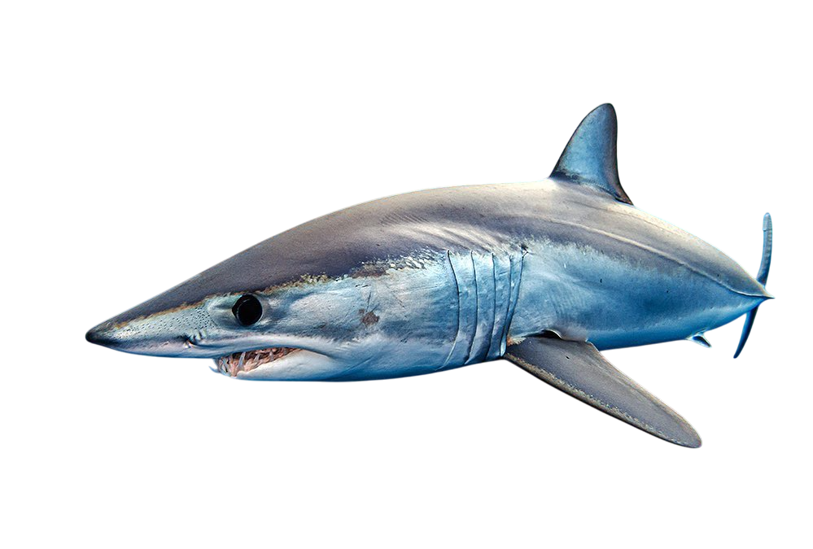

Tiburón Mako

Nombre científico: |
Familia: |
Tamaño: |
Esperanza de vida: |
| índice: |
| -Descripción |
| -Reproducción |
| -Alimentación |
| -Comportamiento |
| -Distribución y Hábitat |
| -Características de su mordida |
| -Tiburón Mako cazando |
Descripción
El marrajo común es un gran tiburón con el cuerpo fusiforme, robusto, macizo y muy hidrodinámico. Su hocico es cónico y puntiagudo y la boca es grande y estrecha, en forma de U con amplios diastemas separando las hemimandíbulas. Los ojos son redondos, negros y de tamaño mediano. Aletas escapulares medianas, de extremo ligeramente redondeado. Primera dorsal mediana y de extremo ligeramente redondeado, con su origen justo por detrás de las escapulares; segunda dorsal y anal diminutas, ambas enfrentadas. Aleta caudal grande de lóbulos anchos y en forma de media luna, con el lóbulo superior ligeramente más grande que el inferior. Hendiduras branquiales grandes, cinco pares en total. Pedúnculo caudal deprimido y ensanchado por grandes quillas laterales muy largas.Es de color azul oscuro en el dorso, más claro en los costados y blanco puro en el vientre.
Reproducción
Esta es una especie ovovivípara, es decir, las crías que no mantienen conexión placentaria con la madre, se alimentan primero de su propio huevo y luego, los más desarrollados, se comen otros huevos e incluso a sus hermanos más pequeños. La gestación dura entre 15 a 18 meses, de donde nacen jóvenes desarrollados, con sus dientes y órganos funcionales.Como ocurre con otros tiburones, esta especie no forma parejas, sino que solo se unen para la reproducción. Además, se ha visto en diferentes hembras que pueden ser encuentros algo violentos, donde los machos muerden las aletas y el vientre de estas. Se estima que el apareamiento ocurre entre finales del verano y principios del otoño.
El rango de crías nacidas está entre 4 a 16 individuos, las cuales miden alrededor de los 70 cm aproximadamente y son totalmente independientes de la madre después del nacimiento. La esperanza de vida del tiburón marrajo es de unos 30 años, siendo esta mayor en las hembras que en los machos.
Alimentación
Este tiburón es un poderoso y veloz cazador de todo tipo de presas; su dieta consiste en peces (pequeños como la caballa, el arenque, el jurel, la sardina, el bonito, el listado, la bacoreta, etc. o grandes como el atún rojo, el pez espada, los marlines y los peces vela) calamares, otros tiburones, tortugas marinas, marsopas, delfines e incluso se han dado casos de ataques a pequeños cetáceos debido a su gran tamaño y agresividad. Es el más importante depredador del pez espada (Xiphias gladius) el cual representa una parte importante de la dieta de los grandes marrajos; Existe el caso de un ejemplar de marrajo de más de 300 kg capturado, en cuyo estómago se encontró un ejemplar joven de pez espada de 55 kg el cual estaba entero. Debido a su gran tamaño, dentición y agresividad son considerados tiburones peligrosos, ya que se han registrado una serie de ataques, tanto provocados como sin provocar. Es también responsable de ataques a embarcaciones (en las que en ocasiones salta en el interior, sobre todo durante la práctica de su pesca deportiva).
A pesar de su voracidad y peligrosidad, el marrajo no está en la cima de la cadena alimentaria ya que la orca es un predador natural de este pez. De hecho, se han registrado casos en aguas de Nueva Zelanda donde una orca destruyó a un marrajo, asestándole con su cola un golpe similar a uno de karate (comparativa realizada por los biólogos que presenciaron el ataque). Sin embargo, el marrajo consigue escapar a la lista de presas de su emparentado tiburón blanco, el otro gran predador marino, por los ambientes frecuentados por cada uno, ya que mientras el tiburón blanco es más frecuente en aguas cálidas y cercanas a la superficie, el marrajo es habitual en aguas profundas.
Comportamiento
El tiburón mako es una especie activa que suele mantenerse en constante movimiento. Es bastante ágil, rápido, llegando a alcanzar velocidades alrededor de los 32 km/h. Uno de sus rasgos particulares, es cuando han sido atrapados y aún se mantienen enganchados, pueden dar saltos fuera del agua.Puede realizar movilizaciones de unos 55 km por día. Generalmente es solitario, pero puede formar ciertas agrupaciones, al parecer, determinadas por el sexo. No es común que ataque a humanos porque no suele estar tan próximo a las costas, pero sí puede ser un tiburón agresivo. De hecho, lo es contra sus presas.
Aunque ha sido una especie algo difícil de estudiar, porque debido a su fuerza y actividad no se tienen en cautiverio, se sabe que tiene muy bien desarrollados los órganos de la visión, del olfato y es capaz de detectar cambios de presión y movimientos del agua, lo cual le da una agudeza sensorial importante.
Distribución
Su distribución en mares y océanos es muy amplia: en el Océano Pacífico, Océano Atlántico, índico, Mar Mediterráneo y Mar Rojo.
Hábitat
El tiburón mako es una especie epipelágica que se encuentra en aguas tropicales y cálidas templadas entre 10-29 grados centígrados, con un rango de temperatura preferido entre 17-22ºC. El mako se distribuye desde la superficie hasta profundidades medias de 450 m, alcanzando ocasionalmente mayores profundidades.
Características de su mordida
 |
Sus dientes superiores son anchos, aplanados y de forma triangular , ideales para desmembrar a sus presas más complicadas. Pese a tener las condiciones de un gran depredador , algunos makos capturados poseen cicatrices o graves heridas generadas por peces espada , lo que significa que no todas las víctimas le son tan fáciles de atrapar. |